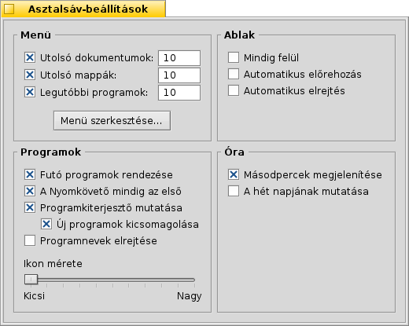

Magyar
Magyar Français
Français Deutsch
Deutsch Italiano
Italiano Русский
Русский Español
Español Svenska
Svenska 日本語
日本語 Українська
Українська 中文 ［中文］
中文 ［中文］ Português
Português Suomi
Suomi Slovenčina
Slovenčina Português (Brazil)
Português (Brazil) English
English| Index |
|
Asztalsáv menü A Polc Futó programok listája |
Asztalsáv (Deskbar)
Az Asztalsáv egy kis panel, ami alap esetben a jobb felső sarokban helyezkedik el. Ez a Haiku megfelelője a Windows Tálcájának. 3 része van: a menü, ahol a programok és beállítások találhatóak, a polc, az órával és a többi eszközzel, és a futó programok listája.

Az Asztalsáv bármelyik sarokba illetve a képernyő aljára és a tetejére húzható a markoló segítségével. Továbbá nem csak a pozíció, hanem a mérete is módosítható: lehet kompakt vagy teljes.
 Asztalsáv menü
Asztalsáv menü
A menü megnyílik, ha az Asztalsávon a logóra kattintunk:

Haiku névjegye... - Alapvető rendszer és jogi információk.
Keresés... - A Kereső panel megnyitása.
Replikánsok megjelenítése - A kis Replikáns jelek megjelenítése/elrejtése, aminek segítségével mozgatható, eltávolítható egy replikáns.
Csatolás - Ez az opció megegyezik az Asztal helyi menüjével (további információk a Lemezek csatolása fejezetben).
Asztalsáv-beállítások... - Az Asztalsáv beállításai (információk lejjebb).
Leállítás - A rendszer a vagy a.
Legutóbbi dokumentumok, mappák, programok - A legutóbb megnyitott dokumentumok, mappák illetve programok listája (bővebben az részben alább).
Programok, Bemutatók, Asztali kisalkalmazások, Beállítások - Az elérhető programok, bemutatók és beállítások listája.
További bejegyzéseket hozhatsz létre bármilyen elemhez (programhoz, mappához, fájlhoz, kereséshez, stb.), amihez hivatkozást készítesz a ~/config/be mappába.
Asztalsáv beállításai

Menü
Megadható az utolsó dokumentumok, mappák illetve programok száma, amik majd megjelennek a menüben, vagy egyártalán megjelenjen-e vagy sem.
A gomb megnyomásával megnyílik a /boot/home/config/be/ mappa. Itt megtaláljuk a menüben megjelenő összes mappát és hivatkozást, melyek alap esetben a , , , és a .
Ezek a bejegyzések törölhetőek vagy újak adhatóak hozzá.A legegyszerűbb az, ha oda húzzuk a hivatkozást, ahol meg akarjuk, hogy jelenjen a menüben.
Ablak
Az Asztalsáv mindig a többi ablak előtt van. Az Asztalsáv előre hozása ha az egér felé kerül. Az Asztalsáv mérete lecsökken mindössze néhány képpontra, majd előjön ha az egér felé kerül. Programok
A futó programok listájának ABC sorrend szerinti rendezése. A Nyomkövető mindig az első a futó programok listájában. Egy kis kapcsoló megjelenítése a program neve mellett, amivel megjeleníthetjük/elrejthetjük a programhoz tartozó ablakok listáját a program neve alatt. Az újonnan indított programok ablak-listájának automatikus megjelenítése. A futó programok listájában a programok neveinek elrejtése. A futó programok listájában a programikonok mérete. Óra
A Polcon a másodpercek megjelenítése az óra mellett. A hét napjának nevének megjelenítése az óra mellett.
A Polc

Többek között a Polc egy órát is tartalmaz. Az egeret az óra felett tartava megjelenik az aktuális dátum. A bal egérgombbal megjelenik egy naptár is. Jobb gombbal pedig az óra megjeleníthető/elrejthető, illetve beállíthatjuk az Időt.
Bármelyik program elhelyezhető a polcon ikon formájában. A levelező rendszer másik ikont jelenít meg ha új levél érkezik, és egy menüvel is rendelkezik, ahonan például új levelet készíthetünk. A Folyamatkezelő egy másik példa, hogy miként jeleníthetünk meg információkat a polcon (processzor/memória használat) és hogy hogyan lehet még menüt hozzáadni.
Futó programok listája

A programok között könnyedén válthatunk, csak az adott program egy ablakára kell kattintani. Jobb egérgombbal pedig elrejthető, bezárható az ablak vagy az egész program.
Ha engedélyeztük a programkiterjesztőt, akkor azzal megjeleníthetjük illetve elrejthetjük a programhoz tartozó ablakok listáját közvetlenül a program alatt.
Az ablakok melletti ikonok információt adnak az ablak állapotáról. A fehér ikon jelzi, hogy az ablak látható, a szürke ikon pedig azt, hogy el van rejtve. A három vonal az ikon előtt arról informál minket, hogy az ablak nem a jelenlegi munkaasztalon található.